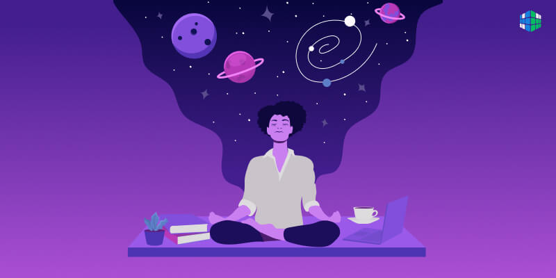

Медитировать Онлайн
Начать
Простая техника | 5 мин
В этом видео я расскажу о том, как научиться медитировать. Многие думают, что медитация - это что-то сложное и непонятное, но на самом деле это очень просто! И я расскажу о простой технике медитации, которую можно освоить буквально за 5 минут!
Сейчас в тренде
Медитация для спокойствия | 7 мин
Выполняя данную медитацию, мы восстанавливаем энергетический ресурс нашего тела и ума. Успокаиваем центральную нервную систему. Настраиваем себя на определенный лад.
Медитация дня
Медитация на хороший день | 10 мин
Привет! Я Алина и это моя вторая медитация, так как первая (совершенно неожиданно) произвела довольно большой резонанс и пришлась сотням тысяч людей по душе. Сегодняшняя медитация направлена на то, чтобы после её прослушивания ранним утром или в обед, ты зарядился энергией, хорошим настроением и желанием жить и творить!
 Все медитации